Problem of the Month
(October 2012)
There are lots of packing problems in the Math Magic Packing Archive. But this month we feature the first 3-dimensional packing problem. What is the smallest cubical box that will fit n cylinders with radius and height 1 (tuna cans) ? What is the smallest cubical box that will fit n cylinders with diameter and height 1 (soup cans) ?
I suspect this is a pretty hard problem if we are allowed to tilt the cylinders, so I also offer the easier problem: What is the smallest cubical box that will fit n cylinders, each parallel to one of the sides of the box?
ANSWERS
Improvements were received by Jeremy Galvagni, David W. Cantrell, and Maurizio Morandi.
Here are the best-known packings of tuna cans. For each, a 3-dimensional view and a top view are provided.
2
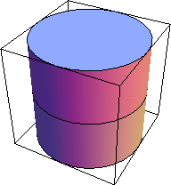
s = 2
| 3
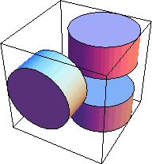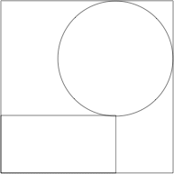
s = 2 + 8/√65 = 2.992+ (DC)
| 6
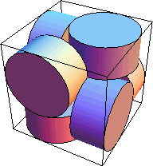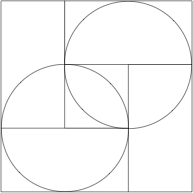
s = 3
| 7
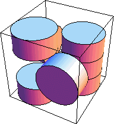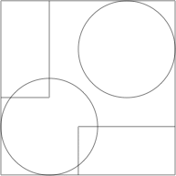
s = 18/5 = 3.6 (DC) (MM)
|
8
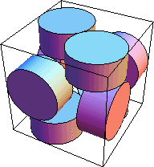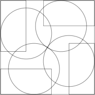
s = 3.683+ (MM)
| 9
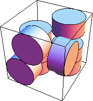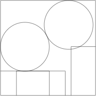
s = 3.890+ (DC)
| 10
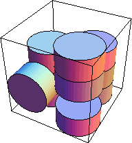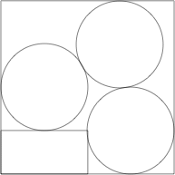
s = 3.985+
| 16
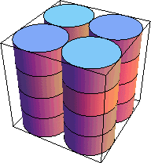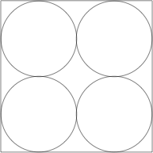
s = 4
|
18
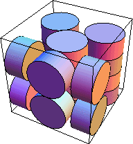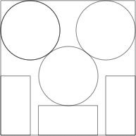
s = 2(7+√19)/5 = 4.543+ (MM)
| 19
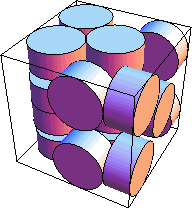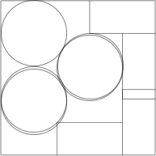
s = 4.709+ (DC)
| 20
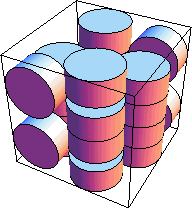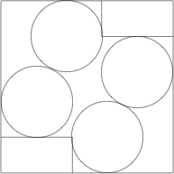
s = 4.816+ (DC)
| 21
 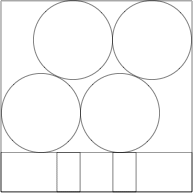
s = 2 + 2√2 = 4.828+
|
22
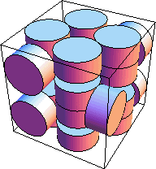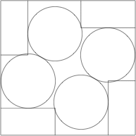
s = 4.947+ (DC)
| 24
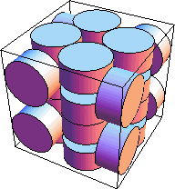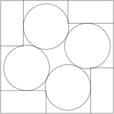
s = 4.959+ (DC)
| 30
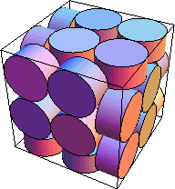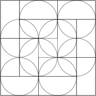
s = 5
| 31
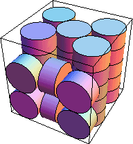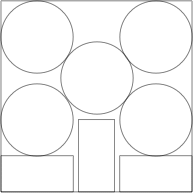
s = (5+√31)/2 = 5.283+
|
32
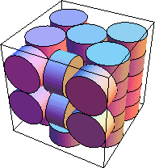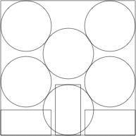
s = 2 + 12/√13 = 5.328+
| 33
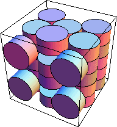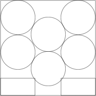
s = 5.512+
| 34
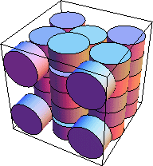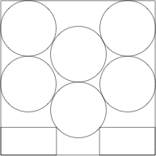
s = 5.546+
| 35
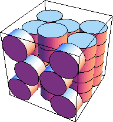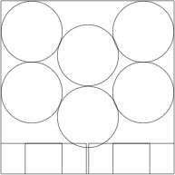
s = 5.669+ (DC)
|
36
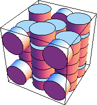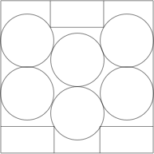
s = 5.714+ (DC)
| 37
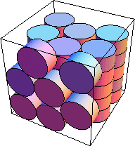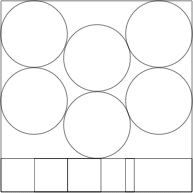
s = 4 + √3 = 5.732+
| 40
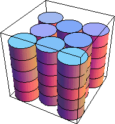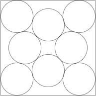
s = 2 + √2 + √6 = 5.863+
| 41
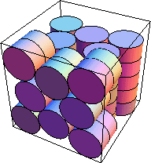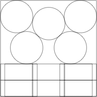
s = 4(14+3√3)/13 = 5.906+
|
42
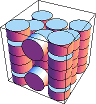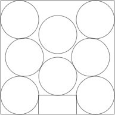
s = 5.970+ (DC)
| 44
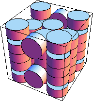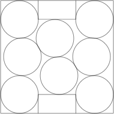
s = 5.988+ (DC)
| 46
s = 5.999+ (DC)
| 54

s = 6
|
Here are the best-known packings of soup cans.
1
s = 2
| 2
s = 2 + √2 = 3.414+
| 3
s = 3 + 1/√2 = 3.707+
| 8

s = 4
|
10
s = 2 + 2√2 = 4.828+
| 12
s = 26/5 = 5.2
| 16
s = 28/5 = 5.6
| 20
s = 4(14+3√3)/13 = 5.906+
|
If you can extend any of these results, please
e-mail me.
Click here to go back to Math Magic. Last updated 10/24/12.